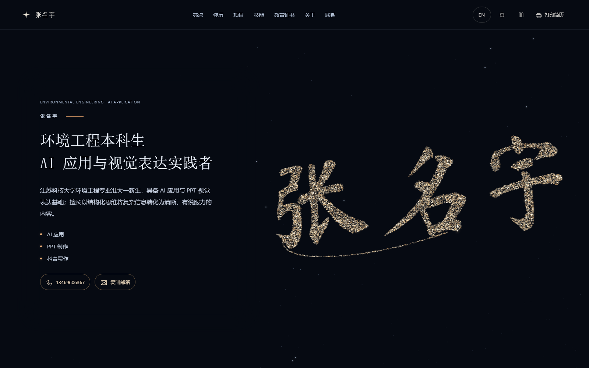
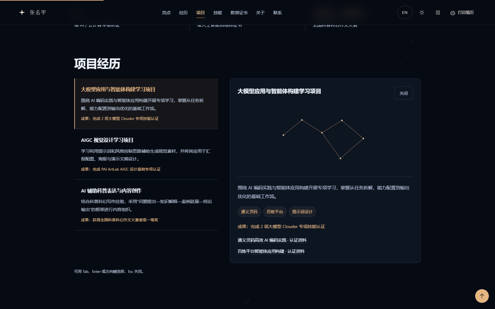
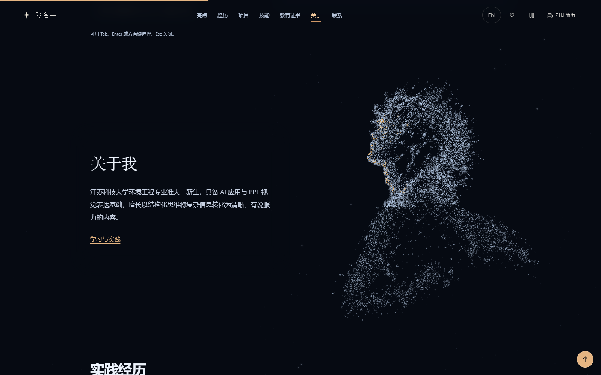
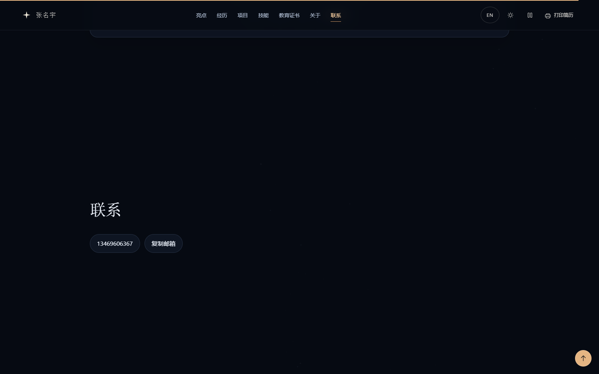

章节构图检查
先确认正文与主视觉的位置，再检查统一的状态过渡。以下为 1600 × 1000 的真实浏览器截图，点击查看原尺寸。




其余章节与移动构图
正反向滚动、导航跳转、中段刷新、30 / 60 / 120 Hz 收敛、50 ms 单帧上限、项目键盘操作、复制邮箱均通过检查。
先确认正文与主视觉的位置，再检查统一的状态过渡。以下为 1600 × 1000 的真实浏览器截图，点击查看原尺寸。




正反向滚动、导航跳转、中段刷新、30 / 60 / 120 Hz 收敛、50 ms 单帧上限、项目键盘操作、复制邮箱均通过检查。